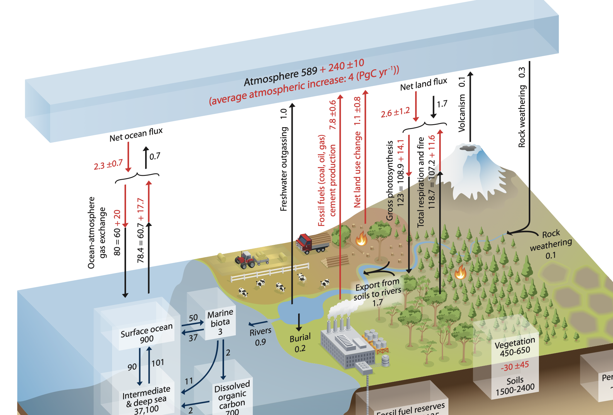

Chapter 7 Nutrition and the environment
7.1 Basics of nutrition and the environment
Learning Objectives
7.1.1 Environmental degradation and climate change
Human activities affect the world around us—our environment. Human-caused effects are described as anthropogenic. Anthropogenic impacts can be adverse or beneficial to the quality of the environment. Before discussing the environmental impacts of dairy production, we must clarify some often-used and often-misunderstood terms.
The term environment refers to the entirety of external conditions affecting the life, development, and survival of an organism (OECD). Major components of the environment includes the atmosphere (air), lithosphere (rocks and soil), hydrosphere (water), and biosphere (living organisms). Environmental degradation refers to trends such as air pollution, soil degradation, water pollution, and habitat destruction (ISO). In contrast, environmental stewardship refers to the responsible use and protection of the environment through conservation and sustainable practices (NOAA).
The term climate refers to the long-term weather patterns associated with a particular area. The climate is determined in large part by atmospheric conditions. However, the climate has drastic effects on the terrestrial aspects of environment (lithosphere, hydrosphere, biosphere). According to the United Nations, climate change refers to long-term shifts in temperatures and weather patterns from natural and anthropogenic causes. Since the 1800s, climate changes have been primarily anthropogenic.
Efforts to reduce negative effects of climate change involve a two-pronged approach: 1) reducing emissions (mitigation) and 2) devising strategies to cope with unavoidable climate change (adaptation). For example, feeding an additive that reduces the dairy industry’s total enteric methane emissions is a mitigation strategy. Genetic selection of cows for resilience to heat stress is an adaptation strategy.
A central concern of many regulatory bodies (e.g., the U.S. Environmental Protection Agency) is creating and enforcing policies that protect the environment’s capacity to support human well-being. This includes policies targeting both environmental degradation

https://www.iso.org/foresight/environmental-degradation.html
https://www.noaa.gov/office-education/noaa-education-council/monitoring-resources/common-measure-definitions/stewardship-definitions
https://climate.nasa.gov/faq/16/is-it-too-late-to-prevent-climate-change/
7.1.2 Carbon cycle
Activity maybe DELETE this Where do plants get their mass? If plants used up soil to create their mass, you might see trees growing in large holes (but the soil could be being replaced??) Most of a plant’s mass comes from carbon dioxide and water. Plants use some mass from the soil
During photosynthesis, C atoms leave the atmosphere and are fixed into plant tissues. For example, the lignin molecules that provide plants structural support contain 65% carbon. Some of these C atoms are released back into the atmosphere during plant cellular respiration, when the plant breaks down biological fuels (carbohydrates, fats, proteins) to generate energy for growth, reproduction, and other life functions. Other C atoms remaining in the plant may consumed by animals.
In ruminants, microbes in the rumen incorporate molecules from plant matter into their own tissues. Microbes also break down biological fuels (carbohydrates, fats, proteins) to generate energy through fermentation. Fermentation releases carbon dioxide (CO2) and methane (CH4) back into the atmosphere.
The ruminant animal uses carbon from the plant and microbes for their own tissues. Animals use cellular respiration to break down biological fuels and produce energy. Animal respiration releases more CO2 back to the atmosphere.
When animals and plants die, microbes decompose their tissues, consuming oxygen and releasing more CO2 back into the atmosphere.
Trophic levels.
Activity
The methane released during rumination still has energy left in it. You may know this intuitively, if you have ever lit a gas stove to cook in your home. Combusting methane releases energy (heat).
Conversely, CO2 is not flammable because it is fully-oxidized. In fact, CO2 is used in some fire extinguishers.
CH4 has carbon in its most reduced form (C oxidation number of -4). Conversely, CO2 has carbon in its most oxidized form (C oxidation number of +4).
oxidation number of carbon in acetic acid = 3
where they are incorporated into the animal tissues and/or broken down (e.g., fermentation, respiration) to produce the energy needed by the animal.
During ph
Simplified equations
Plant respiration
Respiration is basically the reverse.
Plants use some of this glucose for growth, reproduction, and other body processes.
When animals consume plants, they digest the plant and oxidiz
In photosynthesis
7.1.4 Biogeochemical cycles
Biogeochemical cycles are the pathways followed by chemical elements (e.g., carbon, nitrogen, phosphorus) or compounds (e.g., water) as they move through living and non-living parts of the environment. In agriculture, they are sometimes referred to as nutrient cycles. Some elements such as N and C cycle through the atmosphere, lithosphere, hydrosphere, and biosphere. For other elements such as P, the atmosphere is not part of natural cycling.
Slow and fast domain of the C cycle p 470 https://www.ipcc.ch/site/assets/uploads/2018/02/WG1AR5_Chapter06_FINAL.pdf
Dairy production
shows cycling. For example, da
Dairy cattle participate in biogeochemical cycles.
7.1.6 Why measure emissions? Why need predictions?
Rotz (referring to enteric and manure emissions, not entire life cycle)
carbon sequestration on agricultural soils On the other hand, agricultural soils (Paustian et al., 2019) could make a substantial contribution to meeting goals in the Paris Climate Accord. Farmers can be paid for sequestering carbon.
Plant growth is one of the most efficient means of sequestering carbon. Therefore, agriculture and natural resources.
The EPA estimated that dairy cattle
Carbon sequestration is the process by which carbon dioxide is removed from the atmosphere and captured in liquid or solid form.
Global warming potential Critiques
Greenhouse gas (GHG) emissions are quantified in several ways:
- Production, the amount of gas emitted (g) in a certain period of time
- Intensity, the amount of gas emitted (g) relative to the amount of milk yield
- Yield, the amount of gas emitted (g) relative to the amount of dry matter intake (DMI)
Major GHG associated with dairy production include carbon dioxide (CO2), methane (CH4) and nitrous oxide (N20). According to the EPA, GHGs differ in their ability to absorb energy (“radiative efficiency”) and the length of time they remain in the atmosphere (“lifetime”). This means that one gram of CO2 poses different environmental risks compared to one gram of methane or nitrous oxide. For this reason, researchers developed a method for standardizing across GHG called Global Warming Potential (GWP). The GWP tells the amount of energy absorbed by a certain gas over a period of time in the atmosphere, relative to the amount of energy absorbed by CO2. For this reason, GHG emissions calculated using the GWP are referred to as CO2 equivalents (CO2e).
Calculating GWP for a 100 year timeframe, referred to as GWP100, is a common method to standardize across GHG. Using this method:
- CO2 has a GWP100 of 1.0 because it is used as the reference. Emissions of CO2 last for thousands of years in the atmosphere.
- Methane has a GWP100 of 27-30. It has a shorter lifetime than CO2, but greater radiative efficiency.
- Nitrous oxide has a GWP100 of 273 because it has a moderate lifetime (>100 years) and moderate radiative efficiency.
Some authors have advocated for alternative GWP methods. For example, the EPA mentions that GWP20 (GWP calculated for a 20-year lifetime) may be more suited to assessing climate impacts in the near future. Conversely, others have argued that GWP100 and GWP20 are biased in favor of longer-lifetime GHG such as CO2, and against shorter-lifetime gases such as methane. These authors suggested a method called GWP* (pronounced: “GWP star”). The GWP* method uses different assumptions about GHG dynamics in the atmosphere, which the authors claim are a more realistic assessment of warming potential.
https://www.epa.gov/ghgemissions/understanding-global-warming-potentials
*** GHG from livestock in context IPCC tiers https://community.foundationfootprint.com/foundationfootprinthelpcentre/miscellaneous/ipcctiers.aspx *****
7.2 NASEM Nutrition and Environment
7.2.1 Methane
Methane is produced during fermentation of feedstuffs in the reticulo-rumen (97-98% of emissions) and the lower gastrointestinal tract (2-3% of emissions). The term enteric emissions refers to emissions from the digestive tract of the animal, in contrast to emissions from manure outside of the animal’s body. In addition to posing environmental concerns, methane emissions also represent a loss of gross energy for the animal 3.8 to 7.4% of gross energy). This is because methane gas contains energy which is released from the animal’s body rather than used for bodily purposes.
7.2.1.1 Factors affecting methane emissions
Methane is produced primarily during rumen fermentation. Greater DMI is generally associated with more fermentation leading to greater methane emissions. DMI is the strongest predictor of CH4 production according to NASEM (2021). However, the nutrient composition of DMI also matters. Considering that fermentation is the process by which carbohydrates in feed are converted into volatile fatty acids, methane production also depends on the type of carbohydrates fermented (fiber vs. non-fiber) and the types of volatile fatty acids (VFA) produced (e.g., acetate, propionate, butyrate). Fiber fermentation results in greater acetate and hydrogen production, leading to greater CH4 production. Fermentation of non-fiber carbohydrates produces more propionate and consumes hydrogen, reducing CH4 production.
You might wonder… if enteric methane production wastes energy, why was it favored by evolution?
Fermentation proceeds best when the partial pressure of hydrogen in the rumen is low. Conversely, high hydrogen pressure inhibits microbial growth and fermentation. To keep hydrogen pressure low, the rumen environment needs redox reactions to occur where hydrogen electrons are donated to other compounds (referred to as electron acceptors). For example, the most common methane production pathway in ruminants is referred to as hydrogenotrophic methanogenesis (meaning “hydrogen-eating methane-creation”). In this pathway, CO2 (electron acceptor) and H2 (electron donor) react to create methane (CH4) and water (H20). Methanogenesis is not the only pathway that can be used to keep hydrogen partial pressure low. There are many other pathways with alternative electron acceptors. However, the conditions for rumen fermentation in many cases favor methane-producing reactions.
*** Fat electron acceptor *****
7.2.1.2 Mitigation options to reduce enteric methane
NASEM (2021) reviewed several options for mitigating enteric methane emissions, falling into three categories.
- Diet manipulation - changing macronutrient composition of the diet
- Feed additives - feeding additives that modify rumen fermentation (e.g., alternative electron acceptors)
- Increasing animal production through genetics and management - improving animal health and productivity, especially to reduce methane intensity (g/kg FPCM)
7.2.1.3 Enteric methane prediction equations
After examining studies by several authors, the NASEM (2021) committee selected a prediction model for methane using \(DMI\), the DMI in kg/d, \(FA\), the fatty acid content of the diet (% of DM), and \(dNDF\), the digestible neutral detergent fiber in the diet (% of DM). The model is expressed as:
\[Methane (Mcal/d) = (0.294*DMI) -(0.347*FA )+(0.0409*dNDF)\] From this model, we can see that more DMI will lead to greater predicted methane because the 0.294 coefficient is positive. Greater fat in the diet will lead to less methane, because the 0.347 coefficient is negative. Finally, more digestible fiber (dNDF) in the diet will lead to slightly greater predicted methane emissions.
Example: Predict the enteric methane emissions (Mcal/d) from a lactating dairy cow with the following characteristics:
DMI = 25.0 kg/d FA = 2% of DM dNDF = 18% of DM
\[\begin{aligned} MethaneMCal &= (0.294*25) - (0.347*2) + (0.0409*18) \\ &= 7.39 \space Mcal/d \end{aligned}\]
Based on: Wilkerson et al. (1995)
The NASEM (2021) committee recommended a separate model to predict emissions for heifers and non-lactating cows.
For heifers, the model uses \(GEI\), the gross energy intake, and \(NDF\) the percentage of diet DM that is neutral detergent fiber. The model also has an intercept.
\[ Methane (Mcal/d) = (-0.038)+(0.051*GEI )+(0.0091*NDF) \] For non-lactating adult cows (dry cows) the recommended equation uses \(GEI\) and \(CF\), the crude fiber percent in diet dry matter. This equation also has an intercept.
Considering that dry cows are often fed diets with lowly digestible fiber, this could be important.
\[ Methane (Mcal/d) = (0.69)+(0.053*GEI )-(0.045*CF) \]
If we use these models to make predictions, we can see that greater GEI and greater NDF both lead to more methane production. Because methane production is a byproduct of fiber fermentation (breakdown), fiber that is undigested (not broken down) does not contribute to enteric emissions.
Activity: Predict the total methane emissions (Mcal/d) for a herd with the following characteristics:
Animal Inventory: 100 lactating cows 30 dry, non-lactating cows
Lactating cow diet: DMI = 22.0 kg/d FA = 2% of DM dNDF = 15% of DM
Dry cow diet: GEI = 29.7 CF = 25.0
7.2.1.4 Manure methane and volatile solids prediction equations
Methane emissions depend to a large extent on the manure composition and how its stored.
Manure consists of both water and dry matter. The dry matter in manure is sometimes referred to as “solids” content (as opposed to liquid). Over time, organic compounds in the solids fraction continue to breakdown and release methane. In contrast, solid minerals (ash) do not release methane. For this reason, manure methane emissions are predicted using a quantity called volatile solids. This is the amount of organic matter (non-ash dry matter) in manure.
NASEM (2021) provided models to predict manure volatile solids, which can be used alongside information about manure storage to predict manure methane emissions.
\[ Volatile \space solids (kg/d) =( 0.364*DMI) +( 0.026*NDF) - (0.078*CP)\] Using this equation shows that more DMI and NDF result in more manure volatile solids, due to the positive coefficients for these two variables.
Much of Nitrogen is excreted in urine and nitrogen is not a component of CH4.
7.2.2 Nitrogen
7.2.2.1 N2, N2, everywhere and not a drop to use
N is the most abundant element in the atmosphere, comprising 78% of all molecules in air. Most atmospheric N is nitrogen gas (N2). N2 is very inert, because it comprises two N atoms triple-bonded together. The triple bond makes N2 unlikely to react under typical conditions. All other species of N are referred to as “reactive N,” because they are more likely to react with other compounds.
7.2.2.2 Natural fixation
Plants and animals require substantial amounts of N to build proteins and nucleic acids. Although N2 is abundant in air, plants cannot directly use this N. Instead, plants require the reactive N species ammonium (NH4+) and nitrate (NO3-). Certain types of plants such as legumes work symbiotically with soil bacteria to fix atmospheric N2, converting it to plant-usable forms such as ammonium. A small amount of atmospheric N deposition is associated with lightning. The high electrical energy in lightning bolts break N2 bonds, causing N atoms to react with oxygen and water, and eventually fall to earth in raindrops.
Prior to the 20th century, nitrogen fixation occurred only through natural means. In 1910, Fritz Haber and Carl Bosch invented an industrial process for nitrogen fixation called the Haber-Bosch process. Throughout the 20th century, this process enabled synthetic fertilizers to support increases in agricultural production. By the end of the 20th century, researchers estimated that increases in agricultural productivity due to Haber-Bosch-fixed N were responsible for feeding around half (48%) of the global human population (Erisman, 2008).
Although reactive N is required for plant and animal life, excess reactive N can pose challenges to water and air quality. Some N cycle processes also contribute to greenhouse gas emissions.
Ammonium (NH4+) and nitrate (NO3-) are soluble in water, and can leach (filter through soil profile) or runoff (move along soil surface) into water. Ammonia (NH3) volatilization is an air quality concern. Nitrogen can volatilize (turn into ammonia gas) and pose air quality concerns. Ammonia gas can subsequently deposit onto surfaces and water.
In water, N-containing compounds can pose human health risks and upset the balance of aquatic ecosystems. For example, drinking water with high nitrate levels can cause methemoglobinemia, known as “blue baby syndrome” when it occurs in infants. In lakes, streams, and other bodies of water, excess N can cause overgrowth of algaes, referred to as eutrophication.
Ammonia emission is regulated by the EPA. (nasem 304)
https://www.oecd-ilibrary.org/sites/92389a36-en/index.html?itemId=/content/component/92389a36-en
*******AMMONIA EMISSIONS AND PREMATURE DEATH ***** Ag emissions of N20 and ammonia?? vs other sectors**
Literature deep dive: Erisman, J., Sutton, M., Galloway, J. et al. How a century of ammonia synthesis changed the world. Nature Geosci 1, 636–639 (2008). https://doi.org/10.1038/ngeo325
7.2.2.3 Factors affecting nitrogen excretion
The main driver of N losses from dairy cattle is the amount of N consumed. About 1/4 to 1/3 of nitrogen intake is secreted in milk, with the remainder excreted in feces and urine. The proportion of N intake secreted in milk is referred to as N use efficiency.
7.2.2.4 Mitigation of nitrogen losses from cattle operations
There is a great deal of variation in N use efficiency, which may indicate that improvements in dairy cattle N use efficiency are plausible. The most effective strategy to improve N use efficiency is to decrease dietary N concentration (crude protein concentration). However, reducing dietary CP has the potential to impair milk and component production. Because the dairy cow ultimately requires individual AA (not nitrogen), NASEM (2021) suggests that matching dietary AA content with animal AA requirements may improve N use efficiency. Finally, ruminants have a unique ability to recycle urea-N from blood into their gastrointestinal tract. Rates of urea recycling are typically greater when lower-CP diets are fed. NASEM (2021) suggested that it may be possible to improve N use efficiency by taking advantage of urea-N recycling.
7.2.2.5 Nitrogen excretion prediction equations
Environmental modelers need to know N excretion in manure to predict N volatilization, leaching, runoff, and emissions. NASEM (2021) provides several equations to estimate N in milk, urine, and feces.
If DMI (kg/d), dietary CP concentration (%), milk yield (kg/d), and milk protein concentration (%) are known, NASEM (2021) recommends using a “mass-balance” approach. In other words, assuming that any N not secreted in milk was excreted in manure, milk N can be subtracted from dietary intake N to calculate manure N. The “-5” term accounts for N used in body growth.
\[ Manure \space N \space (g/d) = \frac{(DMI*DietCP)}{0.625}-\frac{(Milk*MilkCP)}{0.638}-5 \] However, NASEM (2021) acknowledges that there are often cases when milk protein yield is not known. In these cases, they recommended the following equations for lactating cows:
\[ Urine \space N \space (g/d) = 12.0 +(0.333 *NI )\] \[ Fecal \space N \space (g/d) = -18.5 +(10.1 *DMI) \] \[ Total \space Manure \space N (g/d) = 20.3+(0.654*NI)\] \[ Milk \space N \space (g/d) = -19.0+(8.13*DMI)\]
For heifers and non-lactating cows, N metabolism differs because no milk is produced. NASEM (2021) recommended the following equations in these cases:
\[ Urine \space N \space (g/d) = 14.3 + (0.51*NI )\] \[ Feces \space N \space (g/d) = 0.35+(0.32*NI)\] In each of these equations, we can see that increasing nitrogen intake (NI or DMI*DietCP) is predicted to increase manure N output. Although other factors affect manure N excretion, the NASEM (2021) model includes mainly nitrogen intake because it had the greatest predictive power in meta-analytical research.
Example: Predict the N in manure for a lactating cow with the following characteristics:
DMI = 22.0 kg/d CP = 15% of DM Milk = 37 kg/d MilkCP = 3.0% as-is
\[ Manure \space N \space (g/d) = \frac{(DMI*DietCP)}{0.625}-\frac{(Milk*MilkCP)}{0.638}-5 \]
\[ \begin{aligned} =& \frac{(22.0*15)}{0.625}-\frac{(37.0*3.0)}{0.638}-5 \\ =& 350 \end{aligned} \]
Activity: Predict the N in manure for a lactating cow with the following characteristics:
DMI = 28 kg/d CP = 15% of DM Milk = 36 kg/d MilkCP = 3.1% as-is
\[ Manure \space N \space (g/d) = \frac{(DMI*DietCP)}{0.625}-\frac{(Milk*MilkCP)}{0.638}-5 \]
\[ \begin{aligned} =& \frac{(22.0*15)}{0.625}-\frac{(37.0*3.0)}{0.638}-5 \\ =& 350 \end{aligned} \]
7.2.3 Other environmental concerns
7.2.3.1 Ammonia
About 90% of ammonia-N originates from urine N. Ammonia emission varies widely depending on the weather conditions. Decreasing dietary CP content lowers urine N, which is expected to decrease ammonia emissions. NASEM (2021) does not provide equations to predict ammonia emission.
7.2.3.2 Nitrous oxide
*******check if GHG and N20 defined aboveremove section on water qquality nd ammonia?*** Manure N excretion can contribute to the formation of the GHG nitrous oxide (N20) directly and indirectly. N20 is directly emitted from manure when manure-N compounds undergo hydrolysis, mineralization, nitrification, and denitrification reactions. Additionally, manure N that volatilized, leached, or ran-off can later result in indirect N20 emission.
7.2.4 Integrated approaches
The NASEM (2021) committee emphasized that the ultimate goal is to reduce the “net” negative impacts of dairy production. This is because mitigation strategies that improve one environmental impact can often worsen another. For example, the processes involved in CH4 and N2O emissions are often antagonistic. Reducing dietary N intake often involves adding dietary fiber. This could lead to a reduction in N2O emission, but an increase in CH4 emission.
7.2.5 Minerals
7.2.5.1 Phosphorus
P is a component of cell membranes, DNA, RNA, structures in the body such as bones and teeth, and milk. The amount of P excreted depends on the amount of bioavailable P consumed. Similar to N, increasing P intake is expected to increase P excretion in manure linearly. NASEM (2021) reported that around half or greater of P intake may be excreted in manure (55% P use efficiency).
Manure P can contribute to environmental degradation, especially due to its impacts on water quality. Manure phosphate applied to land adsorbs onto soil particles, so it does not leach into water tables or waterways but instead accumulates in the soil. These soil particles can wash into surface water. The EPA is involved in regulating agricultural practices to control P levels in watersheds (USEPA, 2009).
According to NASEM (2021), surveys of dairy producers indicated that dairy cattle were routinely over-fed P relative to predicted requirements. Therefore, one method to reduce P excretion in manure is to feed dairy cattle P at (rather than above) their requirement. Feeding more readily-fermentable carbohydrates such as starch has also been shown to improve P use efficiency. This may be because fermentable carbohydrate intake increased the activity of rumen microbes and their ability to incorporate P.
NASEM (2021) suggested several equations that can be used to predict P excretion for lactating cows, depending on what data are available. First, in the simplest equation, fecal P output be predicted using only P intake (g/d):
\[Fecal \space P \space (g/d) = -2.3 +0.63 * Pintake \] The second and third equations use P intake (g/d) in combination with milk production (kg/d) to predict fecal P.
\[Fecal \space P \space (g/d) = (0.73 * Pintake) -(0.37*Milk)\] \[Fecal \space P \space (g/d) = 19.9 +(0.79*Pintake) -(1.04*Milk)\] ::: {.green}
Test your knowledge! Which one of the Fecal P equations DOES NOT contain an intercept? How does this affect its predictions?
:::